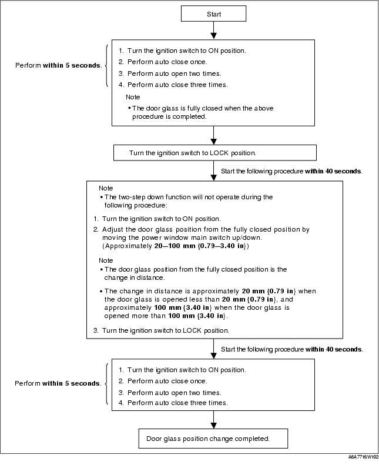

Door glass position change procedure
- • After performing the following procedure, verify that the two-step down function operates normally and the door glass position has changed. If the two-step down function does not operate or the door glass position has not changed, the procedure was not performed properly. Repeat the procedure from the beginning.
